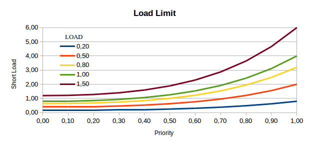
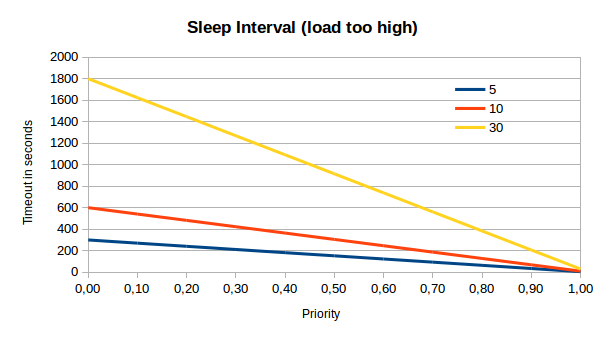

¶ Package: alinex-spawn


This is an object oriented implementation around the core process.spawn
command. It's benefits are:
- automatic error control
- automatic retry in case of error
- automatic delaying in case of high server load
- completely adjustable
- use priorities (also on OS level)
It is one of the modules of the Alinex Universe following the code standards defined there.
¶ Install
The easiest way is to let npm add the module directly:
npm install alinex-spawn --save

¶ Usage
You may connect to the process using a callback method on the run() call or
use the events.
First you have to load the class package.
Spawn = require 'alinex-spawn'
Spawn.init() # optional loading spawn... config
You may also load a specific configuration like:
Spawn.init 'spawn'
Now you may setup an external process like:
proc = new Spawn
cmd: 'date'
You may also change the configuration afterwards like:
proc.config.cmd = 'date'
Now you have multiple ways to work and control your process.
¶ Run with Callback
To run this simple process call the run-method:
proc.run (err, stdout, stderr, code) ->
# work with the results
After the process has completed its task the callback will be called with the
most used data. But you may access all details through the proc object.
¶ Run using Events
With events you can monitor what's going on while the process works.
proc.run()
stdout = ''
proc.on 'stdout', (data) ->
stdout += data
proc.on 'done', ->
# analyse the results
¶ Check for Success
The class will automatically check for success (based on exit code) and run some retries. A message containing the error code and possibly some information from the output will be generated.
You may give a different check method in the configuration which will be used to check whether the process succeeded and return an Error or undefined:
proc.config.check = (proc) ->
return new Error "Got exit code of #{proc.code}" if proc.code
You may also make some ḱind of filter which specifies some known errors:
proc.config.check = (proc) ->
return if proc.stdout.match /Error: Unknown file type/
# else use general check
return proc.constructor.check proc
This check will automatically be called on normal process close. If you want to know if it got an error you can use the event or callback value or check for:
if proc.error
# something went wrong
If a check went wrong the process will be scheduled for retry after the following time (time=retry ^ 3):
| Retry | Timeout | Total | |-------|---------|-------| | 1 | 1s | 1s | | 2 | 8s | 9s | | 3 | 27s | 36s | | 4 | 64s | 100s | | 5 | 2m | 4m | | 6 | 4m | 7m | | 7 | 6m | 13m | | 8 | 9m | 22m | | 9 | 12m | 34m | | 10 | 17m | 50m | | 11 | 22m | 73m | | 12 | 29m | 101m |

On each retry the priority will go down giving in favor for other jobs which didn't failed.
To disable retrying use the configuration:
proc.config.retry = 0
¶ Use load handling and priorities
You don't have to do anything for load handling, it comes out of the box but you may customize it for your machine in the configuration file.
You may also add specific settings dynamically after loading
# This maybe changed per machine.
Spawn.LOAD = 1 # limit system load (limit will be between 0.8*LOAD and 4*LOAD)
Spawn.WAIT = 10 # wait between WAIT seconds and WAIT minutes + queue size
See the detailed explanation below to see what each value means. Also you may specify what the limit of processes for each start period will be.
# The weight which can be started per each start period
Spawn.WEIGHTTIME = 10 # time for each period in seconds
Spawn.WEIGHTLIMIT = 10 # size of load allowed for each period
If you use non standard commands you may help the system balancing the start by giving each command a specific weight. Some default commands are already defined.
# Specific weights for each command
Spawn.WEIGHT.SITMarkAVMulticontainerFFmpeg = 500
A weight of 1 means that it normally may be started 1/sec. If you have a setting above the WEIGHTLIMIT it is started only as first of a time period. Best way is to have the weights < WEIGHTLIMIT to ensure proper priority handling.
If you want to disable the loadhandling you may set the priority of a process
or maybe even the default priority above 1. But keep in mind that this can
lead to a system crash. A Better Way is to set the LOAD setting to a high value
of maybe 5 (will limit the system load at about 20 per cpu).
¶ Retry on failure
If a command got an error it may be called again. How often is specified in it's
configuration retry or from the default retry setting in the class. The next
run will start at the quadrature time in seconds (1, 4, 9, 16, 25, ... seconds).
After the defined number of retries the spawn will return with an error.
If the problem is the process limit it will automatically rerun after 1 second without counting that.
¶ Load handling
Starting lots and heavy processes can lead to a fully overloaded systems which won't really do anything.
To don't get into such a situation the spawn module will check the system and wait for creating the new system processes till the system can handle it. All this have to be done prioritized.
¶ Load checking
Therefore the system will check the current system load. To get a comparable
value the load as displayed in the top command will be harmonized by dividing
it through the number of cpu cores.
load = short-load / num-cpus
So a load of 1 meaning every core has to do enough in the moment, but a system may also have more things to do (meaning they are in the system's queue) as the ones just being processed.
| LOAD | prio 0..1 | quad-core load | comment for setting | |------|------------|----------------|----------------------------| | 0.2 | 0.2 - 0.8 | 0.6 - 3.2 | neither implies the system | | 0.5 | 0.4 - 2.0 | 1.6 - 10.0 | minor priority service | | 0.8 | 0.6 - 3.2 | 2.6 - 12.8 | customer system | | 1 | 0.8 - 4.0 | 3.6 - 20.0 | best performance (default) | | 1.5 | 1.2 - 6.0 | 4.8 - 24.0 | if peaks are short | | 2 | 1.6 - 8.0 | 6.4 - 32.0 | fast but may overload | | 5 | 4.0 - 20.0 | 16.0 - 80.0 | maintenance services only |
As you see the correct setting depends on what purpose the machine has, what else runs on that machine and the priority of the service itself.

Like the above graph shows the spawn module has a load LIMIT set per each
machine. This specifies up to which harmonized load a process can be started.
The graph shows how this is implemented for different priorities.
The default setting for a machine in the backoffice which should run as much processes as possible should be 1.0 while you may use lower values if the system should keep fast and responsible for other things, too.
¶ Sleep Interval
If an process can't be started because the system load is to high and maybe his priority to low, it will be queued and rechecked after a timeout again. Because higher prioritized processes can start earlier they will be checked more frequently than lower priority processes.

The graph shows how long the interval till the next check will be for different
WAIT settings. This value will set the minimum wait time in seconds and the
maximum wait time in minutes.
But to decrease the load the system will get from rechecking thousands of waiting processes the interval also will be 10ms longer for each already waiting process. This gives the system enough performance to also do the real work while rechecking the load.
¶ Priority Level up
To get processes which are waiting long be processed first their priority will slowly increase and go against the highest priority of 1.0.

This causes a reduced waiting time for the next chack and higher load limits.

This diagram shows how long it will take for a specific process call to become a highest priority process while waiting in the queue with different queue lengths.
¶ Start limit
Because the load values will take some time to show the new system load based on just started processes the number of processes to start each second are limited. The system has a limit and time period set (see above) which defines how many processes are allowed to be started.
As an additional benefit smaller processes may be called earlier because their weight is low and can be added to the already high weight.
¶ OS Priorities
The process priorities will not only work for the start queue but also on the operating system if already running. Therefore the nice-value of each process is set appropriate to it's priority. That allows the operating system to give the processes different amount of cpu time. The range goes from 5% to 200% of the normal system process (nice=0).
¶ Real life load
The following chart shows a test measurement on a server while running a high load of audio conversion jobs.

This shows how the system will react based on the load. A high CPU usage over longer time will cause a high load (but also from high IO). So no new processes are started. The running ones end and the load of the system goes slowly down while the current CPU usage is already down. Then the load is low new processes are started and the CPU usage will directly jump up.
But the whole time the system keeps running and being responsive.
¶ API
¶ Class setup
ìnit(config, cb);- initialize the spawn class
¶ Class variables
config(object) - configuration settings for the machineconfigsearch- list of paths to search for config filestime(integer) - current time periodweight(float) - already used weight in this time periodqueue(integer) - number of processes in queuecheckExitCode()- predefined function to use for instances
¶ Instantiate
new Spawn(config);
This will create a new process to be run later. You may define it directly on
instantiation or through it's config property afterwards.
A spawn instance may also be reused to run again or run with some modification
again.
See the config property below for what to be configured here.
¶ Methods
run(cb)- to start a preconfigured process
¶ Properties
config- setup for the process- name (string) - descriptive name (optional)
- cmd (string) - the command to run
- args (array) - all arguments to be given to the command
- cwd (string) - current working directory
- env (object) - environment key-value pairs
- uid (integer) - user identity of the process
- gid (integer) - group identity of the process
- check (function) - to check whether process succeeded
- balance (boolean) - set to true to use server load balancing
- priority (float) - between 0..1
- retry (integer) - number of possible retries
- stdout - function to get stdout line by line
- stderr - function to get stderr line by line
Runtime data
name- descriptive name of the processpid- process pid which has been givenstart- date when the process startedend- date when the process finishedcode- return code of the processstdout- output of the processstderr- error output of the processerror- Error object if one occurredretrycount(integer) - number of retries
¶ Events
fail(object) - if an error occurredstdout(string) - if a line is outputtedstderr(string) - if a error line is outputteddone(integer) - if the process finished giving exit codewait(integer) - if the process is paused given secondsretry(integer) - if the process will be retried after given seconds
¶ Problems
If you get the message that too much event listeners are set on the config
class and this may be a memory leak. You started to much processes while the
config is not fully loaded. Better use the Spawn.init() method with a
callback to wait for the initialization before starting.
¶ License
Copyright 2014 Alexander Schilling
Licensed under the Apache License, Version 2.0 (the "License"); you may not use this file except in compliance with the License. You may obtain a copy of the License at
Unless required by applicable law or agreed to in writing, software distributed under the License is distributed on an "AS IS" BASIS, WITHOUT WARRANTIES OR CONDITIONS OF ANY KIND, either express or implied. See the License for the specific language governing permissions and limitations under the License.